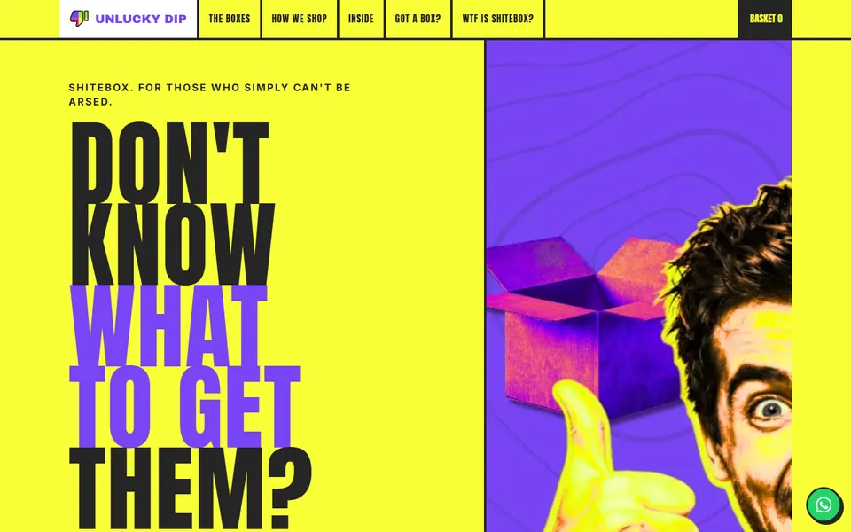
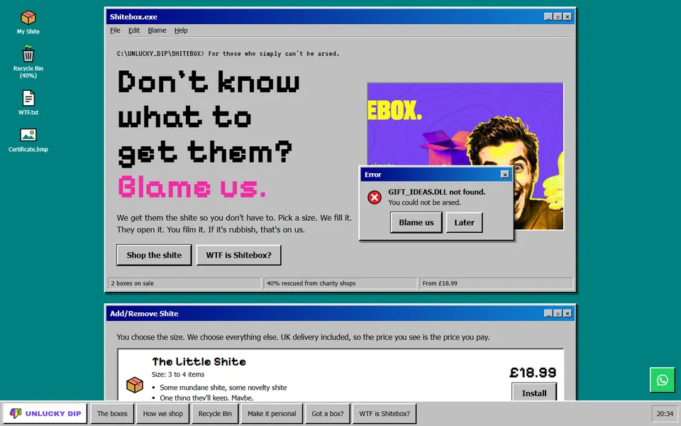
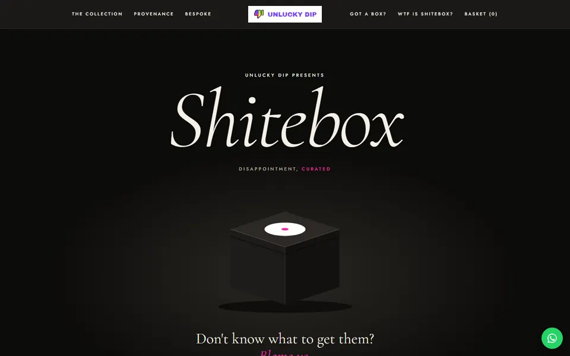
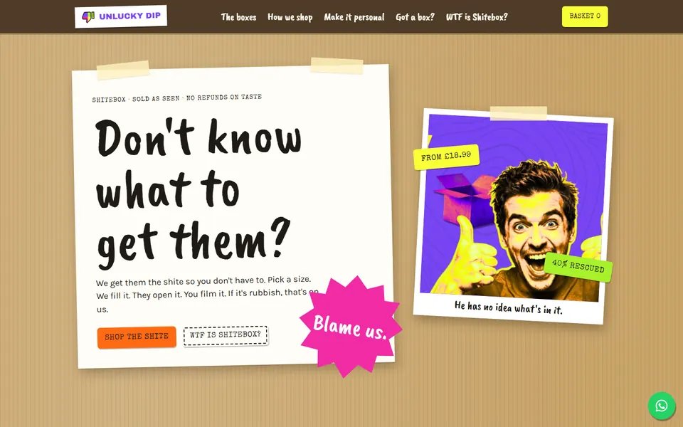
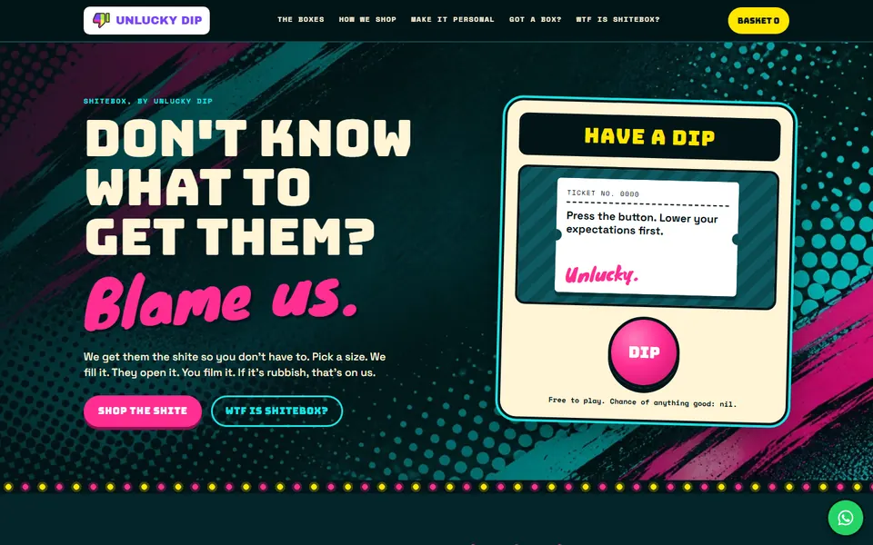
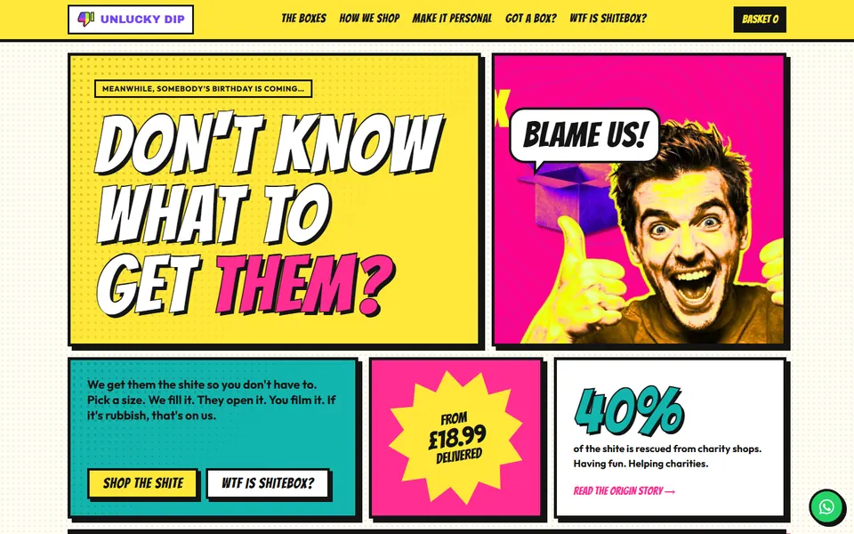

Version 4, 11 November

Rave Flyer is the chosen design. Scott picked it on 11 November 2026 and sent a list of changes. Version 4 below has all of them in. The other five designs are kept underneath for reference and have not been changed. Nothing is for sale yet.
Shorter hero with "You get what you're given" back as the main line, a purple paint texture, Ninja Box and Box Scan in the menu, three sizes, 60% upcycled, and a home page with half the sections it had.

Built after the first three were judged too alike. Each takes its look from a different kind of site: a retro computer desktop, a luxury house, and the charity shop itself.

The site as an old computer desktop. Sections are windows, the menu is the taskbar, the 40% lives in the Recycle Bin and the small print is the blue error screen.

A luxury house with a completely straight face. Black box, fine serif type, roman numerals and a lot of space. Premium on the outside, shite on the inside, like the real box.

The charity shop itself. Cardboard, masking tape, price-gun stickers, swing tags on a rail, a clipboard and a till receipt. The warmest of the six.

A lucky-dip stall after dark, in the teal, cyan and pink of Scott's new artwork. Press the Dip button in the hero. The boxes are raffle tickets and the shopping run is a till receipt.

The site as a comic, to match the pop-art founder portraits. Sections are panels, narration sits in caption boxes, the boxes are comic covers and the founders get speech bubbles.